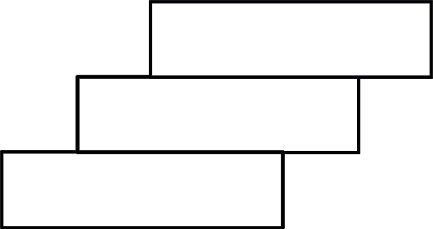

Exercise 1
1.
Draw a circle and then divide it and shade it to show the following fractions:
(a)
(b)
(c)
2.
How many are there in a whole thing?
3.
How many are there in a whole thing?
4.
Mussa cut an orange into two equal pieces as shown in the following figure.
He gave one piece to his sister Neema.
What fraction of the orange did each get?
5.
Shade each figure from (a) to (e) to show the fraction indicated in each figure.
(a)
(b)
